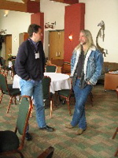

|
Arrival at Denver International Airport |
The conference takes place at Copper Mountain Village, almost 3000m elevation. |
Attendees on the way to the conference |
At the entrance of the conference center |
|
Steve McCormick, Van Henson, and conference organizer Cathy Lee at the registration desk |
Conference audience |
Harald Köstler, a PhD student from Erlangen, presenting his talk |
Matthias Bolten from Jülich, Germany |
|
Markus Stürmer from Erlangen presents his student paper |
Coffee break |
Student participants at the coffee break |

Hans de Sterck and John Ruge in discussion during coffee break |
|
Beer and a huge nacho platter after the talks |
Roman Wienands from Köln University presents his talk |
Irad Yavneh from the Technion, Israel presents his talk |
Uli Ruede talks on solving very large problems with multigrid |
|
Conference founder Steve McCormick |
Conference Co-Chairman Van Henson |
Conference Co-Chair Joel Dendy enjoying a cup of coffee |
Irad Yavneh, Van Henson, and Uli Ruede on the mountain at the top of Excellerator Lift |
|
Kirk Jordan chairing the talk by David Moulton |
Kirk Jordan and Robert Scheichl: two laptop addicts? |
More laptop addicts? |
Multigridders Tom Manteuffel, Robert Scheichl, Uli Ruede, and Kirk Jordan at the top of Sierra Lift (3700 m) |
|
The Program Committee meets for the traditional pizza party |
Program Committee Members: John Ruge, Joel Dendy, Howard Elman, Kirk Jordan, |
Kirk Jordan and Uli Ruede doing "Too Much" (name of a ski run) |
Conference banquet with excellent dinner |
|
Van Henson speaking to the conference participants |
Rob Falgout announcing the NLAA special issue dedicated to the conference |
Night view over copper mountain |
Boulder Pearl Street Mall is also worth a visit |